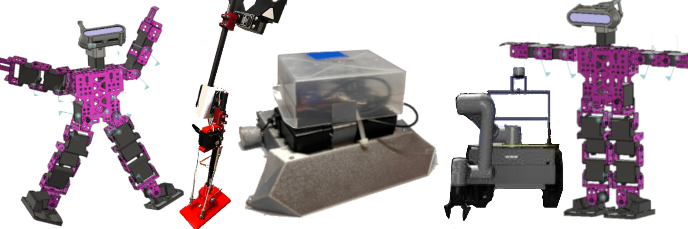

Build Mart Experiment Tools
Tools for a construction project-management experiment using an AI project manager and Minecraft instrumentation.
View projectAlejandroMPerez714@gmail.com · San Antonio, TX
Engineering student and AI researcher focused on robotics and machine learning.

I am a mechanical engineering student at the University of Texas at San Antonio focused on robotics, embedded systems, and machine learning.
Tools for a construction project-management experiment using an AI project manager and Minecraft instrumentation.
View projectDesign and simulation work for a robotic leg using MuJoCo.
View project